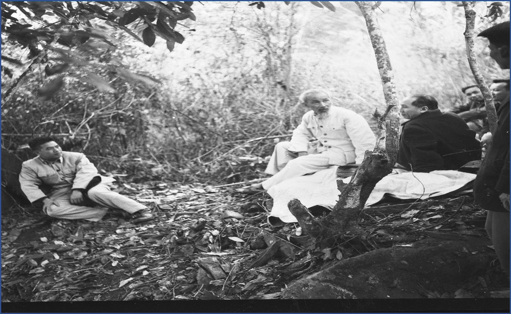
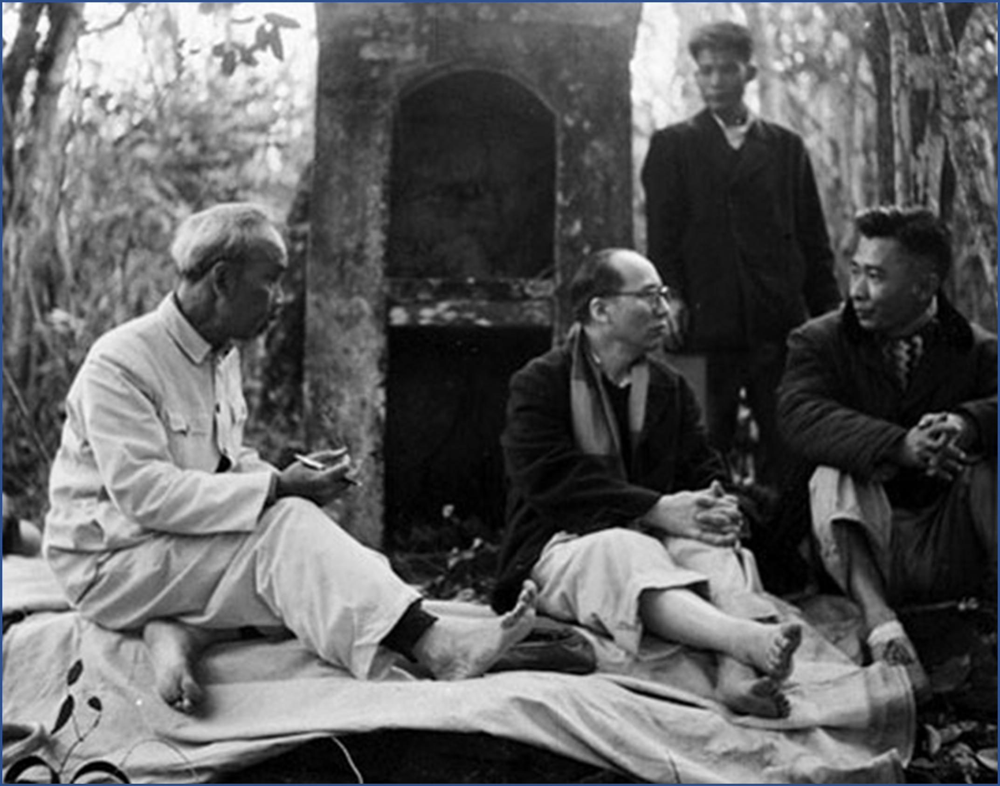
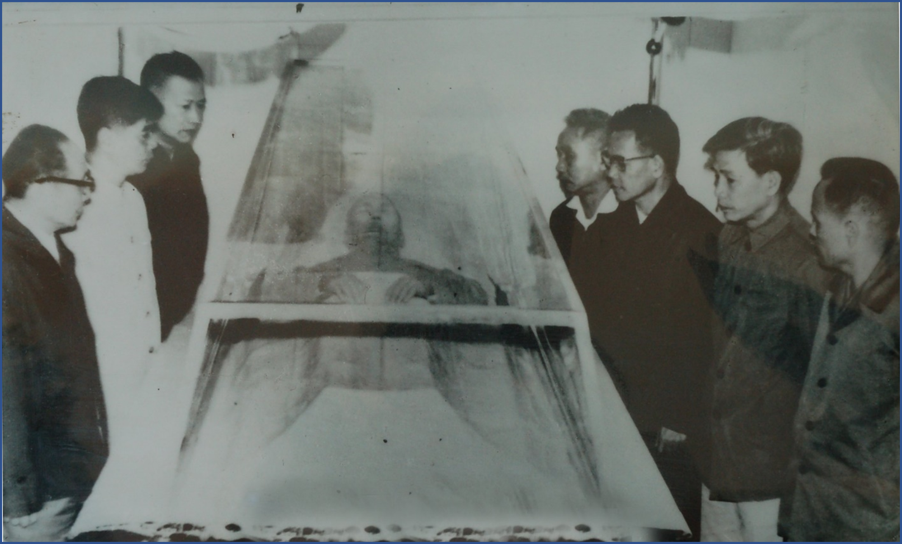
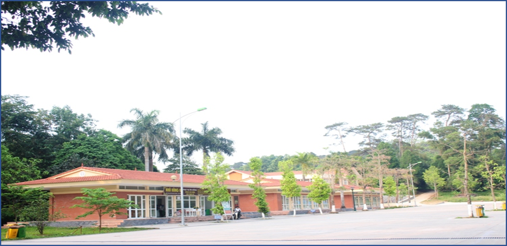

THÔNG TIN GIỚI THIỆU CHUNG
{{itemIntro.title}}
Chức năng nhiệm vụ
Năm 1960, Cục Doanh trại thuộc tổng cục Hậu cần xây dựng một ngôi nhà sàn làm vị trí hội họp nghỉ ngơi của Bác Hồ và Bộ chính trị Trung ương Đảng. Xung quanh là hệ thống công sự kiên cố, khu vực này đặt tên là công trường K9. Trong đó, hầm Tổng đài điện thoại K9 của Cục Bưu điện Trung ương là nơi giữ nhiệm vụ chính trị quan trọng đảm bảo dự phòng thông tin liên lạc khi xảy ra các tình huống nguy cấp như máy bay oanh tạc, hoặc nghi ngờ có địch... Tại K9 Đá Chông còn có một căn hầm khác nữa để phục vụ cho việc trú ẩn của Bộ Chính trị khi gặp nguy hiểm. Cả hai căn hầm này đều được xây dựng kiên cố, bê tông cốt thép rất vững chắc, cửa sắt rất dày, phía trên được ngụy trang rất tốt



Trong những năm 1960-1969, tại nơi này, Bác Hồ và các đồng chí trong Bộ Chính trị đã có lần họp bàn, quyết định những vấn đề quan trọng của đất nước, tiếp 2 đoàn khách quốc tế và nhiều lần Bác lên nghỉ tại đây. Ngày 15 tháng 12 năm 1969, công trình phục vụ nhiệm vụ giữ gìn thi hài Bác hoàn thành. Khu di tích Đá Chông K9 mật danh K9 được đổi thành K84. Từ đó, K84 trở thành nơi giữ gìn thi hài Bác chủ yếu trong những năm tháng chiến tranh ác liệt.


Nhân sự vận hành
Văn phòng Trung ương Đảng giao cho Cục nhiệm vụ củng cố và phát triển hệ thống tổng đài phục vụ Bác Hồ và các đồng chí lãnh đạo Đảng, Nhà nước lên làm việc ở K9 - Đá Chông. Những cán bộ đầu tiên của Cục Bưu điện Trung ương được giao nhiệm vụ phục vụ tại Tổng đài gồm các đồng chí: Nguyễn Văn Hanh, Nguyễn Hữu Hạc, Vũ Văn Kha và Trần Xuân Đam. Những cán bộ này đều được điều động bí mật bởi Trung ương Đảng, đã cùng chung một chiến hào sống và công tác như những chiến sĩ của đơn vị bộ đội bảo vệ K9, giữ bí mật tuyệt đối, đảm bảo thông tin thông suốt trong mọi tình huống. Sau khi Hiệp định Pari về chấm dứt chiến tranh, lập lại hòa bình ở Việt Nam được ký kết năm 1973, các cán bộ của tổ tổng đài đã hoàn thành xuất sắc nhiệm vụ và trở về Hà Nội công tác. Tổng đài điện thoại được giao lại cho đơn vị bộ đội bảo vệ tại khu vực K9 Đá Chông tháng 3/1973.

Lịch sử xây dựng

Lịch sử phục vụ

TƯƠNG TÁC MÔ HÌNH 3D
3D tab2
THƯ VIỆN HÌNH ẢNH , VIDEO

Video 1
Video 2
Video 3
THAM QUAN 3D , BẢN ĐỒ KẾT NỐI

LỊCH SỬ BƯU CỤC TRUNG ƯNG
điện thoại tại K9 - Đá Chông
Tháng 5/1967: Thiết lập tổng đài tại K9 – Đá Chông
Đầu năm 1967, giặc Mỹ tăng cường đánh phá miền Bắc bằng không quân và hải quân. Các cơ quan, đơn vị được lệnh triệt để sơ tán khỏi thành phố, tránh thiệt hại khi giặc Mỹ điên cuồng leo lên nấc thang chiến tranh mới. Thực hiện triển khai mạng liên lạc hữu tuyến phục vụ các cơ quan Trung ương sơ tán ở khu vực Ba Vì, Hà Tây. Tháng 5 năm 1967, thiết lập tổng đài điện thoại K9 tại Đá Chông. Lập đường dây từ khu C (chân núi Đá Chông) sang đài phát tín 80B của Cục Bưu điện Trung ương đặt trong khu rừng thuộc địa phận xóm Lặt, xã Minh Quang, Ba Vì.
Chủ tịch Hồ Chí Minh trong một lần lên thăm, xem xét khu Đá Chông (Ba Vì)

Quyết định thành lập Cục Bưu điện Trung ương
Từ năm 1969 đến năm 2001: Quá trình phục vụ, đảm bảo thông tin liên lạc cho Trung Ương và giữ gìn thi hài Bác.
Tháng 9/1969, Hồ chủ tịch qua đời, Bộ Chính trị và Quân ủy Trung ương quyết định chọn Khu căn cứ Đá Chông (K9) để xây dựng thêm công trình "Ngôi nhà kính", "Hầm ngầm" phục vụ nhiệm vụ giữ gìn thi hài Bác.

Nơi gìn giữ thi hài Chủ tịch Hồ Chí Minh
Tháng 3/1973, sau nhiều lần di chuyển thi hài Hồ chủ tịch đến các địa điểm khác thì Bộ Chính trị và Quân ủy Trung ương đã quyết định đưa thi hài Bác đưa trở lại K84 để bảo quản vì nơi đây có điều kiện kỹ thuật tốt
Quyết định thành lập Cục Bưu điện Trung ương
Năm 1995, Bộ Tư lệnh Bảo vệ Lăng đã tổ chức đón tiếp, phục vụ các đồng chí lãnh đạo Đảng, Nhà nước, lãnh đạo các bộ, ban, ngành ở Trung ương, các địa phương và nhiều đoàn đại biểu của các cơ quan, đơn vị, nhà trường đến dâng hương tưởng niệm Chủ tịch Hồ Chí Minh, tham quan khu vực, trồng cây lưu niệm, tổ chức lễ báo công, lễ kết nạp Đảng, kết nạp Đoàn, sinh hoạt truyền thống.

Các cán bộ thăm lại nơi đặt tổng đài Cục Bưu điện Trung ương phục vụ Bác Hồ tại k9.
Đặc biệt, ngày 16/05/2001, Tổng Bí thư Nông Đức Mạnh đã trồng cây lưu niệm và dự lễ đặt tấm biển đồng kỷ niệm nơi giữ gìn thi hài Bác trong 6 năm chiến tranh chống Mỹ: “Đây là nơi đã giữ gìn thi hài Chủ tịch Hồ Chí Minh từ năm 1969 đến năm 1975”.
Ngày 16/5/2006: Gắn biển di tích tổng đài điện thoại K9 – Đá Chông
Nhân dịp kỷ niệm 116 năm Ngày sinh của Người, Cục Bưu điện Trung ương phối hợp với Bộ Tư lệnh Bảo vệ Lăng Chủ tịch Hồ Chí Minh đã tổ chức lễ gắn biển di tích lịch sử nơi đặt Tổng đài điện thoại phục vụ Trung ương Đảng, Bác Hồ trong những năm từ 1967-1973.

Lễ gắn biển: “ Nơi đặt tổng đài điện thoại phục vụ Chủ tịch Hồ Chí Minh và Trung ương Đảng từ năm 1967 đến năm 1973”.
Năm 2012, đơn vị tiếp tục xây dựng, mở rộng, cải tạo, nâng cấp thành khu hoàn chỉnh để phục vụ đón khách tham quan như hiện nay. Năm 2014, Ban Bí thư Trung ương Đảng đồng ý xây dựng Nhà tưởng niệm Chủ tịch Hồ Chí Minh tại K9. Sau hơn một năm triển khai thực hiện, công trình đã hoàn thành với chất lượng cao về nội dung tư tưởng, kỹ thuật, mỹ thuật, xứng tầm với giá trị của Khu K9.

Nhà tưởng niệm Chủ tịch Hồ Chí Minh tại K9- Đá Chông
Năm 2017: Trùng tu, bảo dưỡng di tích
Sau khi khánh thành Nhà tưởng niệm Chủ tịch Hồ Chí Minh tại Khu K9 ngày 02/09/2015, đến ngày 19/05/2016, Ban Quản lý Lăng Chủ tịch Hồ Chí Minh đã quyết định mở rộng tham quan tới tất cả đồng bào trong cả nước. Tới ngày 19/05/2017 chính thức mở rộng đón khách quốc tế.

Nơi đón tiếp du khách đến tham quan Khu di tích K9 – Đá Chông.


Du khách đến tham quan Nhà tưởng niệm Chủ tịch Hồ Chí Minh tại K9- Đá Chông
Đặc biệt, năm 2017, Bộ Tư lệnh Bảo vệ Lăng đã tổ chức Hội thảo khoa học “Kỷ niệm 60 năm Chủ tịch Hồ Chí Minh đến Đá Chông (05/1957- 05/2017).
- Hiện nay: phục vụ khách trong nước và quốc tế
Hiện nay, Khu di tích tổng đài điện thoại K9 – Đá Chông vẫn đang mở cửa đón tiếp du khách cả trong nước và quốc tế.

Đoàn tham quan nghe hướng dẫn viên giới thiệu về nơi Bác từng ở và làm việc.

Đoàn thanh niên Bộ về nguồn tại Khu di tích K9 – Đá Chông


Áo cá tại K9 – Đá Chông
CÁC KHU DI TÍCH KHÁC